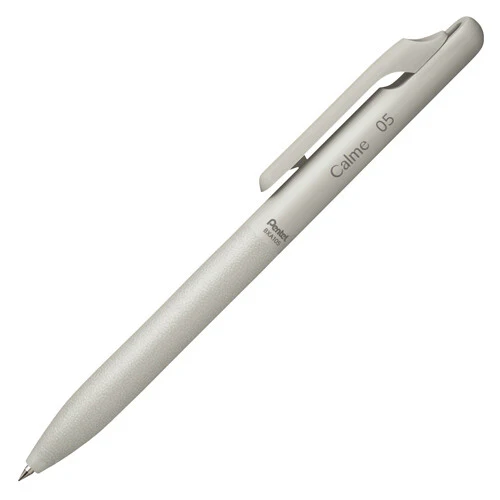
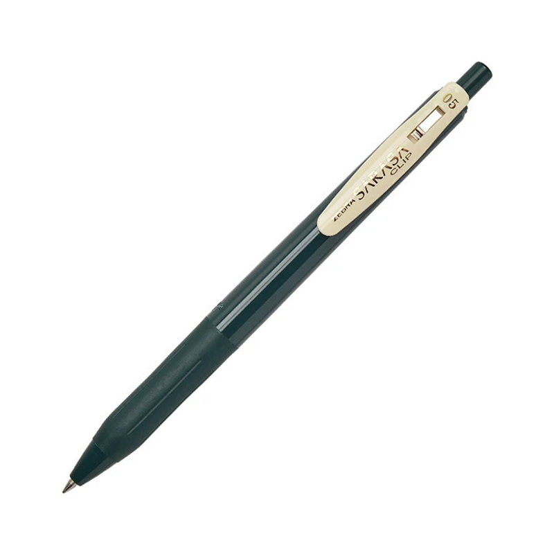
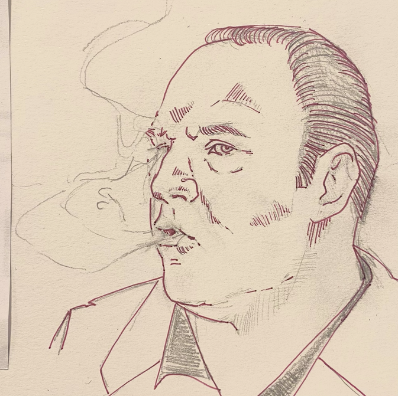
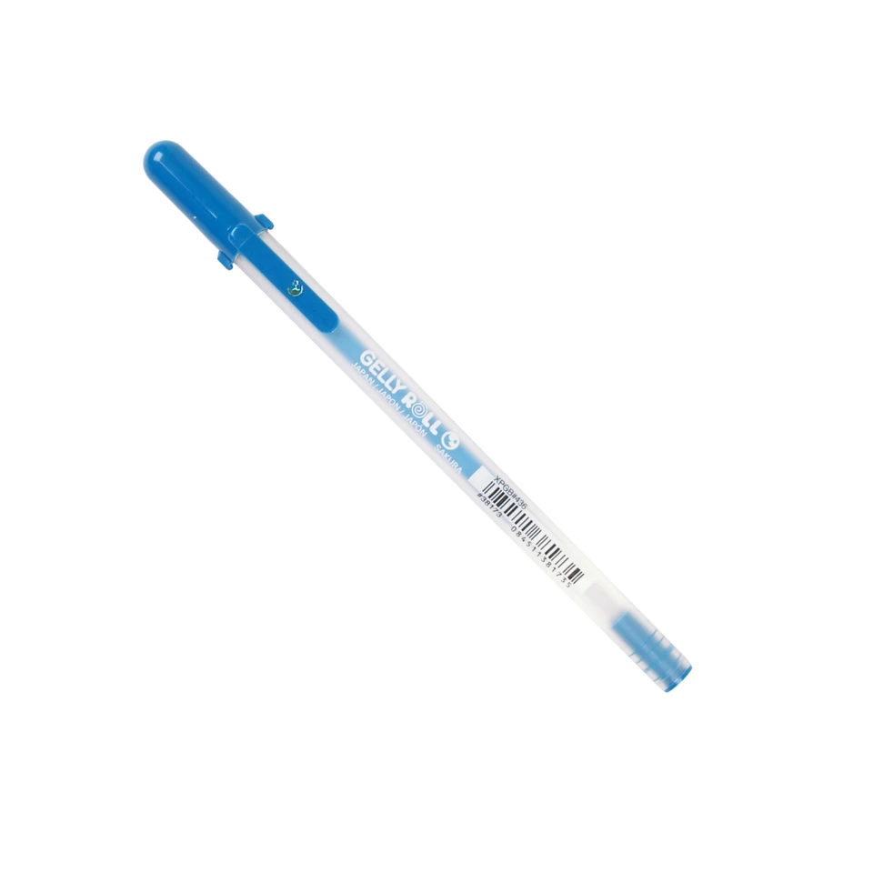

THE INKFINITE WRENCH
June 2026 - Pentel Calme 0.35 - Japan

Amina: The way you click this pen open reminds me of opening the back of a remote open to change the batteries. the OG fidget toy. 2.5/5
Neil: The Pentel Calme looks pretty cool. The clicker mechanism is slick. Nice leathery grip on the lower half. But otherwise this pen sucks shit. The 0.35 tip is absurdly sharp, and writing with it feels like scraping your finger nails on concrete. And for all that effort, the ink is too light and it’s ugly on the page. Literally zero page appeal. Also I pinched my tongue with the clicker but I’m willing to blame myself for that. Hate this pen, won’t use again.
Annie: I immediately lost this pen and didn’t miss it.
Emma:Calme? Me? Calm? Yes, I'm calm. I'm totally fine. nobigdeal.
This pen scratches and claws. Its lightweight body with sleek rounded clicker say "cool girl" but the white-knuckled shred of the pen tip says "control."
I relate.
It's never about the dishes or trimming my bangs and whether the floor is swept, but the way the little tasks I'm responsible for become my defense against chaos of the broader world. When I moved into my current apartment, I had the humbling experience of the chaos feeling bottomless and having to show up to work and rehearsal and friends and knowing I'd left a dozen unresolved tasks in my wake and I still wanted to be loved.
Sometimes the best part of writing a to-do list is just the act of writing, the pen on the paper, wrist loose, blood flowing through the knuckles. The pen you use to write it shouldn't make it feel harder to do.
Connor: I hate this pen too. The soft textures, the rounded edges, it's the kind of thing they give you when they're still concerned you might try to hurt yourself. I might, but I'm not going to use this piece of shit pen to do it. Tacky, ugly, bad writer. ✒️
April 2026 - Zebra SARASA Clip Vintage Gel Retractable - Japan

Annie: Like writing with a fork (derogatory). Sleek design, disappointing execution.
Amina: I've never had a brown pen before, I love it. It reminds me of girls in high school who wore brown eyeliner instead of black eyeliner. It didn't look like they were wearing eyeliner but it made them look sort of smarter and older than they were. Dark brown pen? Are you kidding me? That's fantastic. RUSTIC. Understated. Chill girl. I'm learning that I am just happy to have any pen that is a ~color~. All I ever really do is underline things in my book.
Abby: I lost mine immediately. I've been losing more things lately and trusting that the things I need will come back to me. I found my pills in the car (need). I found the bean bags I borrowed from my parents at the theater (need). I have not found my red socks (want). I have not found my mauve shorts (sad). I have not found my Zebra SARASA Clip Vintage Gel Retractable pen (I do not mourn).
Neil: I wasn’t planning on liking this pen. At 0.5 mm, it’s sharper, scratchier and more harsh than I usually prefer. But wanting to give it a fair shake, and with more free time on my hands than I’ve had in years, I stuck with it much longer than I was initially inclined to, making it my go-to pen while editing a couple of new longform pieces, filling out a bunch of work/school/moving paperwork, writing to-do lists, noting ideas for songs and plays, etc. Given that extra runway to prove itself, I came around on this one- it feels great in the hand, the click is immensely satisfying and, as someone who has pretty much only used one pen for the past 20+ years, damn, a mechanical clip is a game-changer. If they made this pen with a 1.0 tip, I could easily see it becoming a top 5 writing utensil for me. Without that, it’ll remain a reliable tool for note-taking, planner-marking, analog-editing and generally less creative, work-related writing tasks.
Emi: Two or three points darker than your typical corrective red, this pen is best suited to the important tasks of updating one’s planner and jotting down meeting notes. Its fine tip, satisfying scratch on paper, and resistance to globbing, streaking, or dragging makes it ideal for speedy notetaking. This pen begs to make lists, to cross out, to correct, to circle, and to emphasize. (Though perhaps more quietly than its brighter classroom-dwelling cousins.)
While a certified heavy lifter in my meetings this month, this pen is also a welcome addition to my pen case as an artistic implement. This pen surprised me with its flexibility, drawing both quick, sketchy lines and slower, bolder strokes with ease. (The blood-red ink of this pen seemed appropriate to elevate a recent drawing of Tony Soprano that I sketched out after I finished the series for the first time this month. See attached.)
I’m almost always a fan of a mechanical clip, and the Zebra Sarasa Clip is no exception! While perhaps not the sturdiest of clips, it can still handle holding a slim packet of papers or being hooked onto a shirt pocket or planner page. The cream-colored plastic contrasts nicely with the otherwise solid crimson of the body.
Overall, this is a pen I can see myself using until it runs out of ink, or I lose it, whichever comes first. I might even seek it out again! Solid 8.5/10 for fans of roller-ball gel pens.

Emma: Hey, no problem, you can borrow a pen. Yeah, it's not bad. If you really like it you can keep it. I mean, it does me just fine. I like the width of the tip, 0.5 is probably my go-to, or even a little thinner, and this is a thin 0.5. The clip is a little goofy, it feels cheap so it’s not actually that nice to fidget with. But this pen it does the job, I'm not embarrassed to share it with you, I even kinda like the color ink - the one I got is dark green, there were other options, but the dark green felt handsome.
Yeah, that’s the Zebra SARASA Clip Vintage Gel Retractable - handsome and cheap and totally fine, good for keeping notes, but doesn’t inspire much flow.
Connor: By calling it the CLIP they're selling you a pen that (by their admission) is at its best in your pocket. This concept is weak and correctly implies that the writing experience is nothing special. The forest-green ink is subtle and handsome, but I've never had any problems with the clips on my many Pilot G2s or Precise V7 RTs. Also, the '0.5' legend at the top of the clip rubbed off. Looks a little sad. ✒️
March 2026 - Sakura Gelly Roll Moonlight - Japan

Amina: Sakura Gelly Roll Moonlight- Globby? yes. Beautiful color? yes. I've had better gel rollers. I already lost it. I do miss it, though.
Connor: The ink is globby, the clip/cap is useless, and the pen ran dry in about two weeks of use. Becoming an adult means you can finally acquire the treats your parents refused you; growing up means you discover them to be worthless anyway. I liked the sparkly ink enough to use this pen every day, but I complained about it constantly to everyone nearby.
Emma: I knew the Sakura Gelly Roll Midnight before it landed in my hand. A left-handed girl in the 90s, I have smeared the inelegant ink of a Gelly Roll across a wide-ruled sheet of paper at midday, have used it to place dense temporary tattoos on my skin and then lick the color off. I bike home humming "I Have No Fun" by the Vivian Girls and feel its adolescent scrawl permeating my present day.
This pen is pure nostalgia, it writes crudely, with random deposits of ink and a scratchy metallic tip. It is best suited for bringing some humor to a to-do list or considering a new addition to one's forearm.
Annie: The Sakura Gelly Roll Moonlight left my mind almost as quickly as the ink did the vessel. What it did briefly conjure was nostalgia for writing utensils I was never offered as a child - ones reserved for cool girls with nothing but doodling to do. The happiest shades of blue and purple - I'd have to write home about them using a different pen.
Abby: I'm not a big fan of gelly pens and this one, sadly, did not a convert of me make. On a positive note, in a world of constant uncertainty, it's a luxury to have one's convictions further confirmed. I also regret not choosing the teal one.
Ryn: ![So I've never been one of those lefties that bends and contorts their entire arm into an awkward hook to prevent the meaty part of my hand from dragging through every word I write. We ahve the technology to make smooth, fast-drying ink for lefties everywhere to write to their heart's content without worrying if their thoughts witll be smudged away by their handedness. The Sakura Gelly Roll does not utilize that technology. It doesn't so much smear as it does stick. Even as I write this, the page is lifting from the ink on my hand. 1/10. Pictured: a left hand stained with blue ink](images/RH_gelly-roll.png)
Neil: I know where I keep my stuff. I put my things where they belong and they’re there when I need to use them again. I have a good memory and I don’t often lose things. I lost this pen within a week of getting it and had zero interest in finding it. It was chunky and gloppy and didn’t make my writing more fun or whimsical or whatever a writing utensil like this is intended to do.
Once, when I was eight years old, I drank too much strawberry milk at a family friend’s house. I had never puked in public before and I didn’t know how that was supposed to work, so I took my pants down, sat on the toilet and puked all over the floor. I don’t know why this is the story that comes to mind when I think of this pen, but it’s true. ✒️